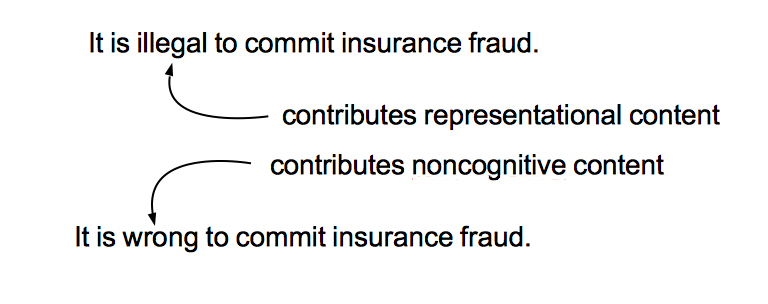

The Unity of Moral Attitudes:
Recipe Semantics and Credal Exaptation
Derek Shiller
Noncognitivism
Moral judgments are not beliefs.
No distinctive representational contents.

Straightforwardly Predicative Moral Judgments
[action type] is [moral label]
It is not wrong to collect trophies of extinct species.
If it had been wrong to bring children into this world, we would not do it.
You should keep track of what you shouldn't do.
Uncertainty about right and wrong.
The Problem
What do all moral attitudes have in common, if not a single motivational influence?
Representational Theory of Mind
Propositional attitudes involve cognitive representations.
Presentational Theory of Mind
Minds employ non-representational structures that look just like its representations.
Moral Concepts
Concepts with a certain role in the context of straightforward predicative moral judgments.
Spandrels Proposal
Moral attitudes other than judgments arose as byproducts of selection for moral judgments.
Moral sentiments are old.
Moral attitudes are young.
Exaptation Proposal
Moral judgments developed out of ordinary beliefs.
Other moral attitudes result from the syntactic properties of cognitive structures in common with propositional attitudes.
Summary
- Moral attitudes include moral concepts.
- Moral concepts are characterized by their role in the context of moral judgments.
- The Unity of Moral Attitudes results from the implementational identity of moral concepts.
- They have no particular function in other contexts, because of their origin as spandrels.